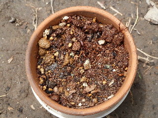

巨峰の種をまきました。
2011/05/04
秋に食べた巨峰の種を一粒、とっておいたものをまきました。
正直、芽が出るかどうかわかりません。

でも育って欲しいな。もっと沢山種を取って置けば良かったかもしれません。
残念です。
次回また挑戦したいと思います。でも次に巨峰を食べるのはいつだろうな？
最近いろんな品種のブドウがあるので別の品種の葡萄を食べて、種をまくかもしれないです。
2011/05/04
秋に食べた巨峰の種を一粒、とっておいたものをまきました。
正直、芽が出るかどうかわかりません。

でも育って欲しいな。もっと沢山種を取って置けば良かったかもしれません。
畑仕事じゃないよ。